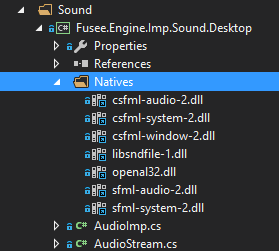
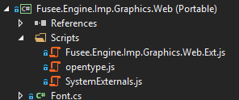
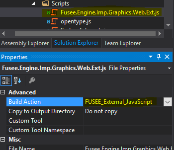
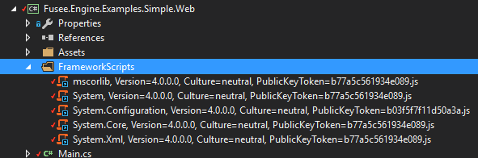

This page describes how the FUSEE build system works. If you want to understand the build system, either because you want to change it or add to it, or because you want to apply similar techniques in your own project's build, you will find some information here.
On this page
Background
The FUSEE build system is built on top of msbuild, which is the build engine running inside Visual Studio. msbuild can also be run stand-alone, e.g. in automated build environments. Due to FUSEE's multiplatform nature, its integration with cross-compiled Java-Script and the need to control and transform digital assets with tools other than the standard compilers shipped with Visual Studio, some hand-coding in the msbuild project files (.csproj) is necessary to setup a consistent, usable, maintainable and extendable build system. All FUSEE custom build functionality is implemented in [FuseeRoot]\src\FuseeBuildActions.targets.xml. This file is included in all projects in the FUSEE source tree (with some exceptions below Tools and Uniplug...). This file should also be included in all custom projects using FUSEE.
General Solution and Project Structure
The entire FUSEE source code is located below [FuseeRoot]\src. Solutions for various aspects containing different sub-sets of FUSEE projects are located directly below src. From there subfolders contain projects (mainly .csproj files for C# projects; Some .vcproj files for C++ projects exist). All output is built into folders below [FuseeRoot]\bin{Debug|Release}. Temporary files are built into folders named after their project files below [FuseeRoot]\tmp. So, in contrast to standard C# projects created with Visual Studio, FUSEE projects do NOT genarate any output to folders directly within the source tree. All temporary and binary output is written into special folders outside of src. To evoke a clean build users should be able to simply delete all contents below [FuseeRoot]\bin and [FuseeRoot]\tmp.
Solutions
There may be more than one solution referencing a subset of FUSEE projects. Solutions frequently used for different purposes may be placed in the FUSEE development root folder. Solution names should start with FUSEE and then a dot-separated specification of the purpose. This could be the name of a root project, e.g. Fusee.Engine.sln. Solutions should reside directly in the "[FuseeRoot]/src" directory.
Projects
The following alterations to standard projects exist in all FUSEE .csproj files. These alterations should be made to any new FUSEE project. Open any .csproj-file in the FUSEE source tree and identify these settings.
<Project ToolsVersion="4.0" DefaultTargets="Build" xmlns="http://schemas.microsoft.com/developer/msbuild/2003">
<PropertyGroup>
<RootNamespace>Fusee.Engine.Imp.Sound.Desktop</RootNamespace>
<AssemblyName>Fusee.Engine.Imp.Sound.Desktop</AssemblyName>
<FuseeBuildRoot Condition=" '$(FuseeBuildRoot)' == '' ">..\..\..\..\..</FuseeBuildRoot>
- The root namespace and the assembly name are equivalent. FUSEE projects define them at the first two
lines of the main
<PropertyGroup>. - A property called
<FuseeBuildRoot>is set (relative) to the root directory from where src, tmp and bin directories branch off. For projects within FUSEE this folder is equivalent to [FuseeRoot]. Projects using FUSEE but not belonging to FUSEE will set a different folder as theFuseeBuildRoot.
Further down in the .csproj file, for each Configuration- and Platform-dependent property group you can find
<OutputPath>$(FuseeBuildRoot)\bin\$(Configuration)\Libraries\</OutputPath>
<BaseIntermediateOutputPath>$(FuseeBuildRoot)\tmp\Obj\$(RootNamespace)\$(Configuration)\</BaseIntermediateOutputPath>
<IntermediateOutputPath>$(BaseIntermediateOutputPath)\</IntermediateOutputPath>
<DefineConstants>TRACE;DEBUG;PLATFORM_DESKTOP</DefineConstants>
- The
OutputPathpath is defined based onFuseeBuildRootset earlier in the project file. The output path directs to [FuseeRoot]\bin - The properties
BaseIntermediateOutputPathandIntermediateOutputPathdirect all temporary output to [FuseeRoot]\tmp - If the Library is an Imp-Lib a platform-dependent constant is defined. This can be omitted in platform-independent
portable libraries. The example here shows an Imp-Lib for the
PLATFORM_DESKTOPplatform. Other platform-dependent libraries may definePLATFORM_WEBPLATFORM_ANDROIDPLATFORM_IOS
Finally, at the end of each FUSEE .csproj file you can find the include statement for FuseeBuildActions.targets.xml.
<Import Project="$(FuseeBuildRoot)\src\FuseeBuildActions.target.xml" />
</Project>
References and Dependencies
FUSEE projects referencing other FUSEE projects should be created using "Project References" (using the
<ProjectReference> msbuild item). In earlier FUSEE implementations direct DLL file references were
favored over project references. The benefits of solution references are
- No "reference not available" issues with a clean (not yet built) solution,
e.g. directly after a fresh pull or a
git clean. - No debug/release mismatches with common output directories.
- Automatic project dependencies/build order management.
All FUSEE DLL projects build their assembly output to a common place below the "[FuseeRoot]/bin" directory. Make
sure that FUSEE DLL projects referencing other FUSEE projects have the Copy Local flag set to false (in the
Properties window for that reference). Otherwise multithreaded rebuilding the solution might be messed up: Projects
clean up their dependencies while other projects build at the same time and need a referenced assembly that was
just deleted by the cleaning thread.
This does not hold for FUSEE EXE projects! Make sure that projects creating .exe files do indeed have the
Copy Local flag set to true. This way, all necessary content is copied to the output folder of the executable.
Make sure to not have Log-Libs directly reference Imp-Libs. Obviously, Log-Libs use functionality
implemented in Imp-Libs but these dependcies are injected at run-time (look for the InjectMe attribute in FUSEE
code). Make sure that FUSEE solutions explicitely define injected dependencies since Visual Studion cannot keep
track of dependencies resulting from run-time injection. See the Platform-Dependent Application Projects of the
"Simple" example to see how to inject dependencies.
Processor Platform
Whenever possible, use AnyCPU as the only available processor platform. This might be impossible in cases where
a processor-platform-specific native (unmanaged) dll is referenced. This should happen ONLY to either Imp-Libs
or platform-dependent Application projects. In these cases there should be NO AnyCPU processor defined within the
.csproj at all. Instead, an x86 platform condition should exist, and possible other conditions if
imlementations of the nativ library exist for other platforms.
Desktop Builds
The FUSEE project types most similar to standard Visual Studio C# projects are Desktop projects. There are Imp-Lib as well as Application projects targeted towards the Desktop platform. Sometimes Imp-Libs reference third-party libraries providing functionality needed by the implementation. These (managed) third party libs in turn sometimes require unmanaged functionality from native dlls. While msbuild copies all managed references to the output, this is not the case for unmanaged dlls. The FUSEE build system provides functionality to also copy native references whenever managed dlls referencing them are written to some output path during the build.
Declaring Native References
A C# project requiring native references can include references by adding the following code directly to their respective C# project file (.csproj):
<ItemGroup>
<FUSEE_Native_Library Include="$(FuseeBuildRoot)\ext\SFML\Windows\csfml-audio-2.dll">
<Link>Natives\csfml-audio-2.dll</Link>
</FUSEE_Native_Library>
See how items can be listed under the FUSEE_Native_Library item name without actually residing in a "Natives" subfolder below the
.csproj they are liste. Here, the native dll physically resides somewhere below [FuseeRoot]\ext but appears inside a folder named
"Natives" when displayed in Visual Studio's Solution Explorer.

Items listed as FUSEE_Native_Library are treated in the following way:
- All native libraries of a project are copied to a subfolder named
.Natives. - For all references of a library-project (dll), any contents of a (maybe non-existing) sub-folder called
.Natives is copied to the .Natives sub-folder. - For all references of an application-project (exe), any contents of a (maybe non-existing) sub-folder called
.Natives is copied directly to the output folder.
This way its sufficient to declare any native (unmanaged) dll in the .csproj file that directly needs the unmanaged dll. Any direct or indirect reference to the .csproj will generate a (recursive) copy of the unmanaged dll up to the place where the dll is needed at run-time from an application.
This behavior is controlled by the following tasks implemented in [FuseeRoot]\src\FuseeBuildActions.targets.xml:
FuseeCopyNativeLibrary- performs step 1 of the above listed steps.FuseeResolveNativeDependencies- performs steps 2 (dll) or 3 (exe) of the above listed steps.
Web Builds
Web builds are projects that are cross-compiled by the JSIL IL-to-JavaScript compiler written by K. Gadd. To integrate JSIL into the FUSEE build process, some custom actions need to be performed. This includes
- Maintaining the presence of hand-written JavaScript together with the library the hand-written implementations are made for. This process is very similar to how native libraries are handled above.
- Compiling a "dummy" C# application assembly together with all depending libraries that serves as input for the JSIL compiler.
- Actually calling the JSIL compiler
- Generating a so-called manifest file containting a list of all generated javascript files and their file sizes.
- Generating a list of assets used by the application
- Generating an HTML file showing the application inside a browser.
From a user perspective, you need to perform the following tasks
- Declare accompanying JavaScript files for Log-Libs and Imp-Libs
- Setup Application projects for the Web platform in the proper way.
Declaring JavaScript files
Put all JavaScript files below a Scripts subfolder under your .csproj and mark them as FUSEE_External_JavaScript. You can
do this directly in Visual Studio's Solution Explorer as long as the .js files physically reside in the Scripts folder:

For every JavaScript (.js) file listed here, set its "Build Action" to FUSEE_External_JavaScript in the File's Properties window.

This will result in the .js files listed under the FUSEE_External_JavaScript item category. So this process is similar to declaring
external native libraries explained above. Here's how the resulting .csproj contents looks like:
<ItemGroup>
<FUSEE_External_JavaScript Include="Scripts\Fusee.Engine.Imp.Graphics.Web.Ext.js" />
<FUSEE_External_JavaScript Include="Scripts\opentype.js" />
<FUSEE_External_JavaScript Include="Scripts\SystemExternals.js" />
</ItemGroup>
If a project contains JavaScripts files marked as above, the Targets
FuseeCopyExternalJavaScriptFuseeResolveJavaScriptDependencies
implemented in [FuseeRoot]\src\FuseeBuildActions.targets.xml perform the (recursive) propagation of .js files up to the final destination (typcally a Web application project).
Setup an Application Project (html) for the Web Platform
Any application project that should generate html/js output to be displayed in a web browser must be setup for JSIL cross compilation. To do this, the application project must generate an executable (instead of a dll). The only purpose of this generated executable is to be passed as input to the JSIL cross-compiler. So this (dummy-) executable with all its dependencies can be considered temporary build output.
Build to tmp and set the WebOutputPath
Thus the 'normal' VisualStudio OutputPath property is redirected to somewhere below tmp. The place where the cross-compiled result (js/html) should be placed, must be specified. This must be done in the .csproj file generation the temporary exe:
<FuseeWebOutputPath>$(FuseeBuildRoot)\bin\$(Configuration)\Examples\Simple\Web\</FuseeWebOutputPath>
<OutputPath>$(FuseeBuildRoot)\tmp\Obj\$(RootNamespace)\bin\$(Configuration)\</OutputPath>
<BaseIntermediateOutputPath>$(FuseeBuildRoot)\tmp\Obj\$(RootNamespace)\$(Configuration)\</BaseIntermediateOutputPath>
<IntermediateOutputPath>$(BaseIntermediateOutputPath)\</IntermediateOutputPath>
- In addtion to the
OutputPath, set aFuseeWebOutputPathproperty, directing Web output to some place below [FuseeRoot]\bin. - The original
OutputPathis set to someplace below [FuseeRoot]\tmp, so the original C#-Compiler output is created at some temporary location.
The Targets performing points 3..6 from the list (all implemented in [FuseeRoot]\src\FuseeBuildActions.targets.xml) are
FuseeJSILCompileFuseeCopyJSILJavaScriptFuseeCopyWebAssetsStylesNHtmlFuseeWebTools
All of these targets operate under the Condition=" '$(FuseeWebOutputPath)' != '' ", so to trigger building a cross
compiled application, you need to set the <FuseeWebOutputPath> as shown above.
Add necessary pre-built dependencies
The normal JSILc operation is to cross-compile the application (.exe) file and recursively all referenced dlls yielding all necessary output as JavaScript files. The generated JavaScript file is named after the respective assembly's long name, e.g.
mscorlib, Version=4.0.0.0, Culture=neutral, PublicKeyToken=b77a5c561934e089.js
(<- it's a file name!!). Unfortunately there are cases where such files are either not generated at all or where generated output should be overridden by other files:
- A portable library may use functionality from the .NET Framework, typically implemented in some System.*.dll. Portable libraries don't explicitely reference .NET Framework dlls such as mscorlib or System. Thus JSILc will not generate JavaScript files for these dlls.
- Typically generated JavaScript for .NET Framework dlls are massive in size. A manually stripped-down version can dramatically speed up load and setup-time of the resulting JavaScript/HTML application.
For both cases it is best practice to add the files to the Web Platform application project (.csproj). These scripts should
be listed under the FUSEE_External_JavaScript as mentioned above. If the files do not reside in a folder under the project folder, you may as well add the files as Item links as described under Declaring Native References. As a convention you may put these files (or links) into a folder called "Framework Scripts"
to emphasize the destinction to "ordinary" external JavaScrips (containing self-implemented functionality rather than .NET Framework functionality.

You can find a number of such scripts that will possibly override JSIL-generated scripts in [FuseeRoot]\ext\JSIL\FrameworkScripts.